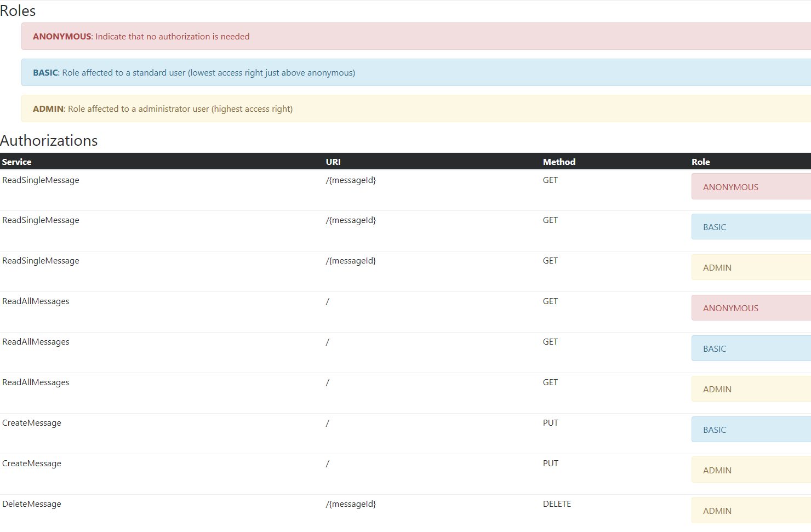

Шпаргалка по автоматизации тестирования авторизации¶
Введение¶
При реализации мер защиты приложения одной из наиболее важных частей процесса является определение и внедрение авторизаций. Несмотря на все проверки и аудиты безопасности, проводимые в процессе создания, большинство проблем с авторизацией возникают из-за того, что при обновлениях добавляются или изменяются функции без оценки их влияния на авторизации приложения (как правило, по причине нехватки ресурсов или времени).
Для решения этой проблемы рекомендуется разработчикам автоматизировать оценку авторизаций и выполнять тестирование при создании новых релизов. Это позволяет команде знать, не будут ли изменения в приложении конфликтовать с определением и/или реализацией авторизации.
Контекст¶
Авторизация обычно содержит два элемента (также называемых измерениями): Функция и Логическая роль, которая к ней обращается. Иногда добавляется третье измерение — Данные — для определения доступа, включающего фильтрацию на уровне бизнес-данных.
Как правило, оба измерения каждой авторизации перечисляются в таблице, называемой матрицей авторизации. При тестировании авторизаций логические роли иногда называются точкой зрения (Point Of View).
Цель¶
Данная шпаргалка предназначена для помощи в разработке собственных подходов к автоматизации тестирования авторизаций в матрице авторизации. Поскольку разработчикам потребуется разработать собственный подход к автоматизации, данная шпаргалка демонстрирует один возможный подход к автоматизации тестирования авторизаций для приложения, предоставляющего REST-сервисы.
Предложение¶
Подготовка к автоматизации матрицы авторизации¶
Прежде чем начать автоматизацию тестирования матрицы авторизации, необходимо выполнить следующее:
-
Формализовать матрицу авторизации в сводном файле, что позволит:
- Легко обрабатывать матрицу программой.
- Предоставить человеку возможность читать и обновлять её при необходимости отслеживания комбинаций авторизаций.
- Настроить иерархию авторизаций, что позволит легко создавать различные комбинации.
- Создать максимально возможную независимость от технологии и дизайна, используемых при реализации приложений.
-
Создать набор интеграционных тестов, полностью использующих сводный файл матрицы авторизации в качестве источника входных данных, что позволит оценивать различные комбинации со следующими преимуществами:
- Минимальный объём поддержки при обновлении сводного файла матрицы авторизации.
- Чёткое указание при провальном тесте исходной комбинации авторизации, не соответствующей матрице авторизации.
Создание сводного файла матрицы авторизации¶
В данном примере используется формат XML для формализации матрицы авторизации.
Эта XML-структура содержит три основных раздела (или узла):
- Узел roles: Описывает возможные логические роли, используемые в системе, содержит список ролей и объясняет различные роли (уровни авторизации).
- Узел services: Содержит список доступных сервисов, предоставляемых системой, описание этих сервисов и определение связанных логических ролей, которые могут их вызывать.
- Узел services-testing: Содержит тестовые данные для каждого сервиса, если сервис использует входные данные, отличные от URL или пути.
Этот пример демонстрирует, как авторизация может быть определена с помощью XML:
Заполнители (значения в {}) используются для обозначения мест, куда интеграционные тесты должны подставить тестовые значения при необходимости
<?xml version="1.0" encoding="UTF-8"?>
<!--
Данный файл материализует матрицу авторизации для различных
сервисов, предоставляемых системой:
Тесты будут использовать его как источник входных данных для различных тест-кейсов:
1) Определяя легитимный доступ и корректную реализацию
2) Выявляя нелегитимный доступ (проблема определения авторизации
в реализации сервиса)
Атрибут "name" используется для уникальной идентификации СЕРВИСА или РОЛИ.
-->
<authorization-matrix>
<!-- Описывает возможные логические роли, используемые в системе; используется здесь для
предоставления списка и объяснения различных ролей (уровни авторизации) -->
<roles>
<role name="ANONYMOUS"
description="Указывает, что авторизация не требуется"/>
<role name="BASIC"
description="Роль для стандартного пользователя (минимальные права доступа, чуть выше анонимного)"/>
<role name="ADMIN"
description="Роль для пользователя-администратора (максимальные права доступа)"/>
</roles>
<!-- Список и описание доступных сервисов системы и связанных логических ролей, которые могут их вызывать -->
<services>
<service name="ReadSingleMessage" uri="/{messageId}" http-method="GET"
http-response-code-for-access-allowed="200" http-response-code-for-access-denied="403">
<role name="ANONYMOUS"/>
<role name="BASIC"/>
<role name="ADMIN"/>
</service>
<service name="ReadAllMessages" uri="/" http-method="GET"
http-response-code-for-access-allowed="200" http-response-code-for-access-denied="403">
<role name="ANONYMOUS"/>
<role name="BASIC"/>
<role name="ADMIN"/>
</service>
<service name="CreateMessage" uri="/" http-method="PUT"
http-response-code-for-access-allowed="200" http-response-code-for-access-denied="403">
<role name="BASIC"/>
<role name="ADMIN"/>
</service>
<service name="DeleteMessage" uri="/{messageId}" http-method="DELETE"
http-response-code-for-access-allowed="200" http-response-code-for-access-denied="403">
<role name="ADMIN"/>
</service>
</services>
<!-- Тестовые данные для каждого сервиса при необходимости -->
<services-testing>
<service name="ReadSingleMessage">
<payload/>
</service>
<service name="ReadAllMessages">
<payload/>
</service>
<service name="CreateMessage">
<payload content-type="application/json">
{"content":"test"}
</payload>
</service>
<service name="DeleteMessage">
<payload/>
</service>
</services-testing>
</authorization-matrix>
Реализация интеграционного теста¶
При создании интеграционного теста следует использовать максимально факторизованный код и один тест-кейс на каждую точку зрения (POV), чтобы проверки можно было профилировать по уровню доступа (логической роли). Это упрощает отображение/идентификацию ошибок.
В данном интеграционном тесте реализованы парсинг, объектное отображение и доступ к матрице авторизации путём маршалинга XML в объект Java и обратного маршалинга (JAXB) для реализации тестов и минимизации объёма кода для разработчика.
Пример реализации класса интеграционного тест-кейса:
import org.owasp.pocauthztesting.enumeration.SecurityRole;
import org.owasp.pocauthztesting.service.AuthService;
import org.owasp.pocauthztesting.vo.AuthorizationMatrix;
import org.apache.http.client.methods.CloseableHttpResponse;
import org.apache.http.client.methods.HttpDelete;
import org.apache.http.client.methods.HttpGet;
import org.apache.http.client.methods.HttpPut;
import org.apache.http.client.methods.HttpRequestBase;
import org.apache.http.entity.StringEntity;
import org.apache.http.impl.client.CloseableHttpClient;
import org.apache.http.impl.client.HttpClients;
import org.junit.Assert;
import org.junit.BeforeClass;
import org.junit.Test;
import org.xml.sax.InputSource;
import javax.xml.bind.JAXBContext;
import javax.xml.parsers.SAXParserFactory;
import javax.xml.transform.Source;
import javax.xml.transform.sax.SAXSource;
import java.io.File;
import java.io.FileInputStream;
import java.util.ArrayList;
import java.util.List;
import java.util.Optional;
/**
* Интеграционные тест-кейсы проверяют корректность реализации матрицы авторизации.
* Создают тест-кейс для каждой логической роли, проверяющий доступ ко всем сервисам системы.
* Реализация ориентирована на читаемость.
*/
public class AuthorizationMatrixIT {
/**
* Объектное представление матрицы авторизации
*/
private static AuthorizationMatrix AUTHZ_MATRIX;
private static final String BASE_URL = "http://localhost:8080";
/**
* Загрузка матрицы авторизации в дерево объектов
*
* @throws Exception При возникновении любой ошибки
*/
@BeforeClass
public static void globalInit() throws Exception {
try (FileInputStream fis = new FileInputStream(new File("authorization-matrix.xml"))) {
SAXParserFactory spf = SAXParserFactory.newInstance();
spf.setFeature("http://xml.org/sax/features/external-general-entities", false);
spf.setFeature("http://xml.org/sax/features/external-parameter-entities", false);
spf.setFeature("http://apache.org/xml/features/nonvalidating/load-external-dtd", false);
Source xmlSource = new SAXSource(spf.newSAXParser().getXMLReader(), new InputSource(fis));
JAXBContext jc = JAXBContext.newInstance(AuthorizationMatrix.class);
AUTHZ_MATRIX = (AuthorizationMatrix) jc.createUnmarshaller().unmarshal(xmlSource);
}
}
/**
* Тест доступа к сервисам от имени анонимного пользователя.
*
* @throws Exception
*/
@Test
public void testAccessUsingAnonymousUserPointOfView() throws Exception {
//Выполнение тестов - без токена доступа
List<String> errors = executeTestWithPointOfView(SecurityRole.ANONYMOUS, null);
//Проверка результатов тестов
Assert.assertEquals("Access issues detected using the ANONYMOUS USER point of view:\n" + formatErrorsList(errors), 0, errors.size());
}
/**
* Тест доступа к сервисам от имени обычного пользователя.
*
* @throws Exception
*/
@Test
public void testAccessUsingBasicUserPointOfView() throws Exception {
//Получение токена доступа для данной точки зрения
String accessToken = generateTestCaseAccessToken("basic", SecurityRole.BASIC);
//Выполнение тестов
List<String> errors = executeTestWithPointOfView(SecurityRole.BASIC, accessToken);
//Проверка результатов тестов
Assert.assertEquals("Access issues detected using the BASIC USER point of view:\n " + formatErrorsList(errors), 0, errors.size());
}
/**
* Тест доступа к сервисам от имени пользователя с правами администратора.
*
* @throws Exception
*/
@Test
public void testAccessUsingAdministratorUserPointOfView() throws Exception {
//Получение токена доступа для данной точки зрения
String accessToken = generateTestCaseAccessToken("admin", SecurityRole.ADMIN);
//Выполнение тестов
List<String> errors = executeTestWithPointOfView(SecurityRole.ADMIN, accessToken);
//Проверка результатов тестов
Assert.assertEquals("Access issues detected using the ADMIN USER point of view:\n" + formatErrorsList(errors), 0, errors.size());
}
/**
* Оценка доступа ко всем сервисам с использованием указанной точки зрения (POV).
*
* @param pointOfView Точка зрения для использования
* @param accessToken Токен доступа, связанный с точкой зрения в части авторизации.
* @return Список обнаруженных ошибок
* @throws Exception При возникновении любой ошибки
*/
private List<String> executeTestWithPointOfView(SecurityRole pointOfView, String accessToken) throws Exception {
List<String> errors = new ArrayList<>();
String errorMessageTplForUnexpectedReturnCode = "The service '%s' when called with POV '%s' return a response code %s that is not the expected one in allowed or denied case.";
String errorMessageTplForIncorrectReturnCode = "The service '%s' when called with POV '%s' return a response code %s that is not the expected one (%s expected).";
String fatalErrorMessageTpl = "The service '%s' when called with POV %s meet the error: %s";
//Получение списка сервисов для вызова
List<AuthorizationMatrix.Services.Service> services = AUTHZ_MATRIX.getServices().getService();
//Получение тестовых данных для сервисов
List<AuthorizationMatrix.ServicesTesting.Service> servicesTestPayload = AUTHZ_MATRIX.getServicesTesting().getService();
//Последовательный вызов всех сервисов (без акцента на производительность)
services.forEach(service -> {
//Получение тестовых данных для текущего сервиса
String payload = null;
String payloadContentType = null;
Optional<AuthorizationMatrix.ServicesTesting.Service> serviceTesting = servicesTestPayload.stream().filter(srvPld -> srvPld.getName().equals(service.getName())).findFirst();
if (serviceTesting.isPresent()) {
payload = serviceTesting.get().getPayload().getValue();
payloadContentType = serviceTesting.get().getPayload().getContentType();
}
//Вызов сервиса и проверка соответствия ответа
try {
//Вызов сервиса
int serviceResponseCode = callService(service.getUri(), payload, payloadContentType, service.getHttpMethod(), accessToken);
//Проверка, определена ли роль для данной точки зрения в текущем сервисе
Optional<AuthorizationMatrix.Services.Service.Role> role = service.getRole().stream().filter(r -> r.getName().equals(pointOfView.name())).findFirst();
boolean accessIsGrantedInAuthorizationMatrix = role.isPresent();
//Проверка соответствия поведения коду ответа и настроенной авторизации в матрице
if (serviceResponseCode == service.getHttpResponseCodeForAccessAllowed()) {
//Роль не в списке допустимых для доступа к сервису — ошибка
if (!accessIsGrantedInAuthorizationMatrix) {
errors.add(String.format(errorMessageTplForIncorrectReturnCode, service.getName(), pointOfView.name(), serviceResponseCode,
service.getHttpResponseCodeForAccessDenied()));
}
} else if (serviceResponseCode == service.getHttpResponseCodeForAccessDenied()) {
//Роль в списке допустимых для доступа к сервису — ошибка
if (accessIsGrantedInAuthorizationMatrix) {
errors.add(String.format(errorMessageTplForIncorrectReturnCode, service.getName(), pointOfView.name(), serviceResponseCode,
service.getHttpResponseCodeForAccessAllowed()));
}
} else {
errors.add(String.format(errorMessageTplForUnexpectedReturnCode, service.getName(), pointOfView.name(), serviceResponseCode));
}
} catch (Exception e) {
errors.add(String.format(fatalErrorMessageTpl, service.getName(), pointOfView.name(), e.getMessage()));
}
});
return errors;
}
/**
* Вызов сервиса с указанными данными и возврат полученного HTTP-кода ответа.
* Этот шаг вынесен отдельно для упрощения поддержки тест-кейсов.
*
* @param uri URI целевого сервиса
* @param payloadContentType Тип содержимого отправляемых данных
* @param payload Отправляемые данные
* @param httpMethod Используемый HTTP-метод
* @param accessToken Токен доступа для идентификации вызывающей стороны
* @return Полученный HTTP-код ответа
* @throws Exception При возникновении любой ошибки
*/
private int callService(String uri, String payload, String payloadContentType, String httpMethod, String accessToken) throws Exception {
int rc;
//Построение запроса - использование Apache HTTP Client для большей гибкости комбинаций
HttpRequestBase request;
String url = (BASE_URL + uri).replaceAll("\\{messageId\\}", "1");
switch (httpMethod) {
case "GET":
request = new HttpGet(url);
break;
case "DELETE":
request = new HttpDelete(url);
break;
case "PUT":
request = new HttpPut(url);
if (payload != null) {
request.setHeader("Content-Type", payloadContentType);
((HttpPut) request).setEntity(new StringEntity(payload.trim()));
}
break;
default:
throw new UnsupportedOperationException(httpMethod + " not supported !");
}
request.setHeader("Authorization", (accessToken != null) ? accessToken : "");
//Отправка запроса и получение HTTP-кода ответа
try (CloseableHttpClient httpClient = HttpClients.createDefault()) {
try (CloseableHttpResponse httpResponse = httpClient.execute(request)) {
//Содержимое ответа здесь не важно...
rc = httpResponse.getStatusLine().getStatusCode();
}
}
return rc;
}
/**
* Генерация JWT-токена для указанного пользователя и роли.
*
* @param login Логин пользователя
* @param role Логическая роль авторизации
* @return JWT-токен
* @throws Exception При возникновении любой ошибки в процессе создания
*/
private String generateTestCaseAccessToken(String login, SecurityRole role) throws Exception {
return new AuthService().issueAccessToken(login, role);
}
/**
* Форматирование списка ошибок в строку для вывода.
*
* @param errors Список ошибок
* @return Строка для вывода
*/
private String formatErrorsList(List<String> errors) {
StringBuilder buffer = new StringBuilder();
errors.forEach(e -> buffer.append(e).append("\n"));
return buffer.toString();
}
}
При обнаружении проблемы (или нескольких проблем) с авторизацией вывод будет следующим:
testAccessUsingAnonymousUserPointOfView(org.owasp.pocauthztesting.AuthorizationMatrixIT)
Time elapsed: 1.009 s ### FAILURE
java.lang.AssertionError:
Access issues detected using the ANONYMOUS USER point of view:
The service 'DeleteMessage' when called with POV 'ANONYMOUS' return
a response code 200 that is not the expected one (403 expected).
The service 'CreateMessage' when called with POV 'ANONYMOUS' return
a response code 200 that is not the expected one (403 expected).
testAccessUsingBasicUserPointOfView(org.owasp.pocauthztesting.AuthorizationMatrixIT)
Time elapsed: 0.05 s ### FAILURE!
java.lang.AssertionError:
Access issues detected using the BASIC USER point of view:
The service 'DeleteMessage' when called with POV 'BASIC' return
a response code 200 that is not the expected one (403 expected).
Отображение матрицы авторизации для аудита / проверки¶
Даже если матрица авторизации хранится в человекочитаемом формате (XML), может потребоваться отображение XML-файла в удобочитаемом виде для выявления потенциальных несоответствий и упрощения проверки, аудита и обсуждения матрицы авторизации.
Для этого можно использовать следующую XSL-таблицу стилей:
<?xml version="1.0" encoding="UTF-8"?>
<xsl:stylesheet xmlns:xsl="http://www.w3.org/1999/XSL/Transform" version="1.0">
<xsl:template match="/">
<html>
<head>
<title>Authorization Matrix</title>
<link rel="stylesheet"
href="https://maxcdn.bootstrapcdn.com/bootstrap/4.0.0-alpha.6/css/bootstrap.min.css"
integrity="sha384-rwoIResjU2yc3z8GV/NPeZWAv56rSmLldC3R/AZzGRnGxQQKnKkoFVhFQhNUwEyJ"
crossorigin="anonymous" />
</head>
<body>
<h3>Roles</h3>
<ul>
<xsl:for-each select="authorization-matrix/roles/role">
<xsl:choose>
<xsl:when test="@name = 'ADMIN'">
<div class="alert alert-warning" role="alert">
<strong>
<xsl:value-of select="@name" />
</strong>
:
<xsl:value-of select="@description" />
</div>
</xsl:when>
<xsl:when test="@name = 'BASIC'">
<div class="alert alert-info" role="alert">
<strong>
<xsl:value-of select="@name" />
</strong>
:
<xsl:value-of select="@description" />
</div>
</xsl:when>
<xsl:otherwise>
<div class="alert alert-danger" role="alert">
<strong>
<xsl:value-of select="@name" />
</strong>
:
<xsl:value-of select="@description" />
</div>
</xsl:otherwise>
</xsl:choose>
</xsl:for-each>
</ul>
<h3>Authorizations</h3>
<table class="table table-hover table-sm">
<thead class="thead-inverse">
<tr>
<th>Service</th>
<th>URI</th>
<th>Method</th>
<th>Role</th>
</tr>
</thead>
<tbody>
<xsl:for-each select="authorization-matrix/services/service">
<xsl:variable name="service-name" select="@name" />
<xsl:variable name="service-uri" select="@uri" />
<xsl:variable name="service-method" select="@http-method" />
<xsl:for-each select="role">
<tr>
<td scope="row">
<xsl:value-of select="$service-name" />
</td>
<td>
<xsl:value-of select="$service-uri" />
</td>
<td>
<xsl:value-of select="$service-method" />
</td>
<td>
<xsl:variable name="service-role-name" select="@name" />
<xsl:choose>
<xsl:when test="@name = 'ADMIN'">
<div class="alert alert-warning" role="alert">
<xsl:value-of select="@name" />
</div>
</xsl:when>
<xsl:when test="@name = 'BASIC'">
<div class="alert alert-info" role="alert">
<xsl:value-of select="@name" />
</div>
</xsl:when>
<xsl:otherwise>
<div class="alert alert-danger" role="alert">
<xsl:value-of select="@name" />
</div>
</xsl:otherwise>
</xsl:choose>
</td>
</tr>
</xsl:for-each>
</xsl:for-each>
</tbody>
</table>
</body>
</html>
</xsl:template>
</xsl:stylesheet>
Пример отображения:
